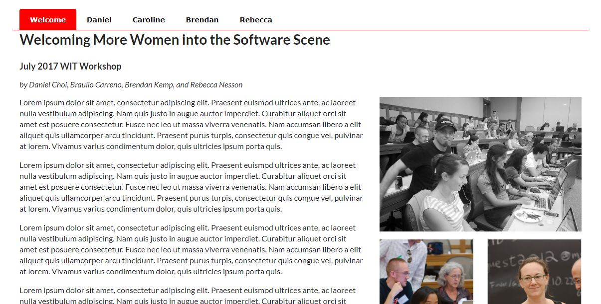
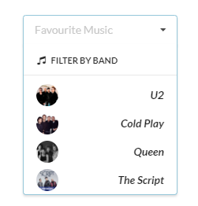

This lab looks at some some of the Semantic UI menu options.
A simple menu can be created using the .ui.menu class. And you may specify how many items are in the menu. For each menu item you add the .item class, and
for the current (active) item, add the .active class.
<div class="ui three item menu">
<a class="active item" href = "index.html">WIT Home Page</a>
<a class="item" href = "aboutwit.html">About WIT</a>
<a class="item" href = "director.html">Director's Welcome</a>
</div>Menu items can be displayed vertically (instead of horizontally).
<div class="ui vertical menu">
<a class="active red item">
Inbox
<div class="ui red left pointing label">1</div>
</a>
<a class="item">
Spam
<div class="ui label">51</div>
</a>
<a class="item">
Deleted
<div class="ui label">1</div>
</a>
</div>A menu can point to show its relationship to nearby content.
<div class="ui pointing menu">
<a class="active item" href= "index.html">Home</a>
<a class="item" href= "aboutwit.html">About WIT </a>
<a class="item" href= "director.html">Director</a>
</div>
<div class="ui segment">
<h2>WIT Home Page</h2>
<p>Waterford Institute of Technology (WIT) is a university-level institution in the South-East
of Ireland with over 10,000 students and 1000 staff. </p>
<p>WIT offers tuition and research programs in various areas up to PhD level.</p>
</div>
</div>Some classes are copied (from semantic.css) into our .CSS file and modified as necessary.
Here we make the following changes:
.ui.pointing.menu .item {
font-family: Verdana, Geneva, Arial, Helvetica, sans-serif;
color: black;
font-weight:bold;
}
.ui.pointing.menu .active.item:after {
background-color: #256290;
}
/* Hover */
.ui.pointing.menu .item:hover {
background-color:#9FB6CD;
color:white;
}
/* Active */
.ui.pointing.menu .active.item {
background-color:#256290;
color:white;
font-weight:bold;
}A tabular(tabbed effect) menu can be added by using the .ui.tabular.menu class. A tab is a hidden section of content activated by a menu, and will only become visible
when given the class name .active.
<div class="ui top attached tabular menu">
<a class="active item" data-tab="index">WIT Home Page</a>
<a class="item" data-tab="aboutwit">About WIT</a>
<a class="item" data-tab="director">Director's Welcome</a>
</div>
<div class="ui bottom attached tab item active segment" data-tab="index">
<h2>WIT Home Page</h2>
<p>Waterford Institute of Technology (WIT) is a university-level institution in the South-East
of Ireland with over 10,000 students and 1000 staff. </p>
<p>WIT offers tuition and research programs in various areas up to PhD level.</p>
</div>
<div class="ui bottom attached tab item segment" data-tab="aboutwit">
<h2>About WIT </h2>
<p>Waterford Institute of Technology is one of the largest institutes of technology in Ireland.
It was established as a Regional Technical College in 1970, and was the first to be awarded Institute of Technology status in 1998.
Over the period of this process, and as a result of an international quality review, the Institute was granted delegated authority by the
National Council for Educational Awards to confer its own Certificates and Diplomas.
</p><p>
...
</div>
...In the above example, because all the sites information is in the one file, we target each tab item using the data-tab attribute.
Rather than having one large file, we can move the tab information into different files as in the following example.
<div class="ui top attached tabular menu">
<a class="active item" href = "index.html">WIT Home Page</a>
<a class="item" href = "aboutwit.html">About WIT</a>
<a class="item" href = "director.html">Director's Welcome</a>
</div>
<div class="ui bottom attached tab item active">
<h2>WIT Home Page</h2>
<p>Waterford Institute of Technology (WIT) is a university-level institution in the South-East
of Ireland with over 10,000 students and 1000 staff. </p>
<p>WIT offers tuition and research programs in various areas up to PhD level.</p>
</div>The above example can be modified by adding some of the style rules from the semantic.css file into your own .css file. You can then modify the property values. Here we make the following changes:
/* Tabular Menu */
.ui.tabular.menu {
margin-bottom:1em;
}
/* Menu items */
.ui.tabular.menu .item {
font-family: Verdana, Geneva, Arial, Helvetica, sans-serif;
color: black;
font-weight:bold;
}
/* Hover */
.ui.tabular.menu .item:hover {
background-color:#9FB6CD;
color:white;
border-radius: 0.28571429rem 0.28571429rem 0px 0px !important;
border-color: #9FB6CD;
}
/* Active */
.ui.tabular.menu .active.item {
background-color:#256290;
color:white;
border-color: #256290;
}More information about menus and tabular menus may be found at Semantic UI Menu.
A web page has been created (and styled) for you, add Semantic UI table classes that will:
Add CSS style rules that will:
.ui.tabular.menu and change the border bottom colour property to red..ui.tabular.menu .item and modify some properties so that the font family is some sans-serif font, and the menu item is black and bolded..ui.tabular.menu .item:hover and modify some properties so that the background colour is pink and the colour is white.
Add a border radius (as in the .ui.tabular.menu .active.item). Finally, add a border colour of pink.
A dropdown menu allows a user to select a value from a series of options. Most dropdown menus require JavaScript code to run.
To create a simple(basic) dropdown menu, after declaring the .ui.menu class, add the .ui.dropdown.item class.
A dropdown icon class is added to denote that it is a dropdown. Then, we specify a ui.menu class and within the menu, add menu items using the ui.item class.
The menu items are displayed when the user hovers over the menu.
<div class="ui compact menu">
<div class="ui simple dropdown item">
Gender
<i class="ui dropdown icon"></i>
<div class="ui menu">
<div class="ui item">Female</div>
<div class="ui item">Male</div>
</div>
</div>
</div>To create a dropdown menu where the menu items are displayed when the user clicks on the menu, we add the ui.dropdown class.
To allow the user enter the first of the menu item and then the menu item is selected based on the character entered, we add
the .selection class also. We also add a hidden text box. For example, for the Gender dropdown menu, if a user types f then Female is displayed.
In the example below, the .ui.selection.dropdown class is declared, and a hidden text field is added, which will hold the value chosen (0 or 1). Again an icon is added to help
the accessibility of the web page. The text to be displayed is added via the .ui.default.text class.
Again, we specify a ui.menu class and within the menu, add menu items using the ui.item class. A data-value attribute is added for each item to record which menu item is selected.
<div class="ui selection dropdown">
<input type="hidden" name="gender">
<i class="dropdown icon"></i>
<div class="default text">Gender</div>
<div class="menu">
<div class="item" data-value="1">Male</div>
<div class="item" data-value="0">Female</div>
</div>
</div>To enable the dropdown, we need some JavaScript code.
<script>
$('.ui.dropdown').dropdown();
</script>Here, the dropdown menu is selected and the dropdown() method is executed for that dropdown menu.
Furthermore, some CSS is added to remove the border between menu items.
.ui.selection.dropdown .menu .item {
border-top: none;
}Note: If you leave out the .selection class, you lose the option to type menu items and there is no border on the menu.
The following example displays a dropdown menu with an image avatar as part of each menu item.
<div class="ui selection dropdown">
<input type="hidden" name="user">
<i class="dropdown icon"></i>
<div class="default text">Select Friend</div>
<div class="menu">
<div class="item" data-value="jenny">
<img class="ui mini avatar image" src="images/jenny.jpg">
Jenny Hess
</div>
<div class="item" data-value="elliot">
<img class="ui mini avatar image" src="images/elliot.jpg">
Elliot Fu
</div>
<div class="item" data-value="stevie">
<img class="ui mini avatar image" src="images/stevie.jpg">
Stevie Feliciano
</div>
<div class="item" data-value="christian">
<img class="ui mini avatar image" src="images/christian.jpg">
Christian
</div>
<div class="item" data-value="matt">
<img class="ui mini avatar image" src="images/matt.jpg">
Matt
</div>
<div class="item" data-value="justen">
<img class="ui mini avatar image" src="images/justen.jpg">
Justen Kitsune
</div>
</div>
</div>The previous two examples allowed the user to type but you could not see the letters typed. To improve on this, we will use the .select class.
A selection dropdown can allow a user to search through a large list of choices.
<div class="ui search selection dropdown">
<input type="hidden" name="country">
<i class="dropdown icon"></i>
<div class="default text">Select Country</div>
<div class="menu">
<div class="item" data-value="af"><i class="af flag"></i>Afghanistan</div>
<div class="item" data-value="ax"><i class="ax flag"></i>Aland Islands</div>
...
</div>
</div>This example can be further enhanced by adding an icon to the menu as in the following example.
<div class="ui floating selectable dropdown labeled search icon button">
<input type="hidden" name="country">
<i class="world icon"></i>
<div class="default text">Select Country</div>
<div class="menu">
<div class="item" data-value="af"><i class="af flag"></i>Afghanistan</div>
<div class="item" data-value="ax"><i class="ax flag"></i>Aland Islands</div>
...
</div>
</div>A selection dropdown can allow multiple search selections. Include the .multiple class as in the following example.
<div class="ui search selection labeled icon button dropdown multiple">
<input type="hidden" name="country">
<i class="world icon"></i>
<div class="default text">Select Country</div>
<div class="menu">
<div class="item" data-value="af"><i class="af flag"></i>Afghanistan</div>
<div class="item" data-value="ax"><i class="ax flag"></i>Aland Islands</div>
...
</div>
</div>Note: When we include icons in the dropdown, include the .button class also.
A menu item may include a header. In the following example, the menu items have a header which is styled (semantic.css) and includes an icon.
<div class="ui selection dropdown">
<input type="hidden" name="county">
<i class="filter icon"></i>
<span class="default text">Select a County</span>
<div class="menu">
<div class="header">
<i class="tags icon"></i>
Filter by County
</div>
<div class="item">
Galway
</div>
...
</div>
</div>You can add a .divider class if you want to separate items with a line as can be seen in the following
example.
<div class="ui selection dropdown">
<input type="hidden" name="county">
<i class="filter icon"></i>
<span class="default text">Select a County</span>
<div class="menu">
<div class="header">
<i class="tags icon"></i>
Filter by County
</div>
<div class="divider"></div>
<div class="item">
Kilkenny
</div>
...
</div>
</div>Finally take a look at this example, which includes a menu and a dropdown menu.
More information about menus and dropdown menus may be found at Semantic UI Menu and Semantic UI Dropdown.
A web page has been created for you, add Semantic UI table classes that will:
Add CSS style rules that will:
